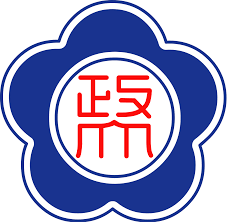

NCCU

css saves a lot of work
本校自民國16年創立，民國43年在臺復校，迄今歷經93年，其間雖經改制、遷校，但始終秉持和諧、自主、均衡、卓越之創校宗旨，不斷精進教學及學術研究，以期配合國家建設、社會發展的需要，培育優秀人才。
本校擁有文學、社會科學、商學、傳播、外語、法學、理學、國際事務、教育及創新國際等10個學院、34個學系、4個學士學位學程、1個院大一大二不分系、1個院設學士班、43碩士班、12個碩士學位學程、1個碩士原住民專班、34個博士班、4個博士學位學程、1個院設博士班、12個碩士在職專班(其中含7個全英語學位學程)，計有約16,000多名學生。（教學單位清單）
校內行政單位設有6處：教務處、學生事務處、總務處、研究發展處、國際合作事務處、秘書處。5室：稽核室、主計室、人事室、體育室、校務研究辦公室。1館：圖書館。5中心：公共行政及企業管理教育中心、社會科學資料中心、電子計算機中心、教學發展中心、產學營運暨創新育成總中心。1會：性別平等教育委員會。3輔助教學單位：華語文教學中心、附設實驗國民小學、附屬高級中學。（行政單位列表）
另設有國際關係、選舉、第三部門、創新與創造力、臺灣、中國大陸、人文、心智大腦與學習、原住民族、華人宗教等10個研究中心。（研究單位列表）
本校設有附屬高級中學、附設實驗國民小學及幼稚園，擁有自幼兒園、小學、中學以迄大學、碩、博士班的一貫完整學制。
為追求卓越，邁向國際一流大學，建立長期校務諮詢機制，97年1月15日通過設置辦法成立校務諮詢委員會，置委員11至13人，延攬國內外各領域之專精學者、長才，廣納建言。校長為召集人，校長、副校長為當然委員，其餘委員由校長就校內外學者專家聘任之，任期2年。針對校務相關及本校長期發展之規劃建設，擔任諮詢重任。
本校自民國16年創立，民國43年在臺復校，迄今歷經93年，其間雖經改制、遷校，但始終秉持和諧、自主、均衡、卓越之創校宗旨，不斷精進教學及學術研究，以期配合國家建設、社會發展的需要，培育優秀人才。
本校擁有文學、社會科學、商學、傳播、外語、法學、理學、國際事務、教育及創新國際等10個學院、34個學系、4個學士學位學程、1個院大一大二不分系、1個院設學士班、43碩士班、12個碩士學位學程、1個碩士原住民專班、34個博士班、4個博士學位學程、1個院設博士班、12個碩士在職專班(其中含7個全英語學位學程)，計有約16,000多名學生。（教學單位清單）
校內行政單位設有6處：教務處、學生事務處、總務處、研究發展處、國際合作事務處、秘書處。5室：稽核室、主計室、人事室、體育室、校務研究辦公室。1館：圖書館。5中心：公共行政及企業管理教育中心、社會科學資料中心、電子計算機中心、教學發展中心、產學營運暨創新育成總中心。1會：性別平等教育委員會。3輔助教學單位：華語文教學中心、附設實驗國民小學、附屬高級中學。（行政單位列表）
另設有國際關係、選舉、第三部門、創新與創造力、臺灣、中國大陸、人文、心智大腦與學習、原住民族、華人宗教等10個研究中心。（研究單位列表）
本校設有附屬高級中學、附設實驗國民小學及幼稚園，擁有自幼兒園、小學、中學以迄大學、碩、博士班的一貫完整學制。
為追求卓越，邁向國際一流大學，建立長期校務諮詢機制，97年1月15日通過設置辦法成立校務諮詢委員會，置委員11至13人，延攬國內外各領域之專精學者、長才，廣納建言。校長為召集人，校長、副校長為當然委員，其餘委員由校長就校內外學者專家聘任之，任期2年。針對校務相關及本校長期發展之規劃建設，擔任諮詢重任。